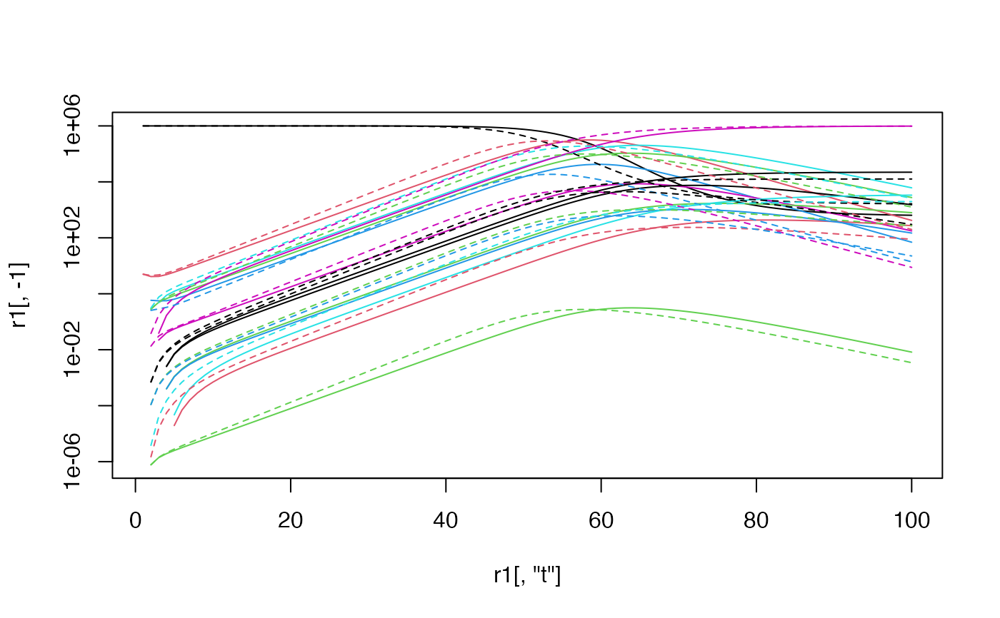

Run simulation across a range of times
run_sim_range(
params,
state = make_state(params[["N"]], params[["E0"]]),
nt = 100,
dt = 1,
M = NULL,
ratemat_args = NULL,
step_args = NULL,
use_ode = FALSE,
ode_args = list()
)named vector of parameters
named vector of states
number of steps to take
time step (days)
rate matrix
additional arguments to pass to make_ratemat
additional arguments to pass to do_step
solve as differential equation?
additional arguments to ode()
params <- read_params("ICU1.csv")
r1 <- run_sim_range(params)
r2 <- run_sim_range(params,use_ode=TRUE)
matplot(r1[,"t"],r1[,-1],type="l",lty=1,log="y")
#> Warning: 129 y values <= 0 omitted from logarithmic plot
matlines(r2[,"t"],r2[,-1],lty=2)
